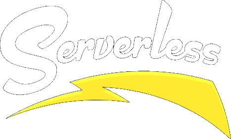

Arquitecturas basadas en funciones usando 

Ezequiel Gonzalez Rial
@gonrial
¿Qué es Serverless?
Esperen ... no tan rápido
Evolución
Servidores Físicos
(Horas)Máquinas Virtuales
(Minutos)Contenedores
(Minutos)Funciones como Servicios
(Milisegundos)
Beneficios
- Simplificación
- Auto-escalable
- Se dispara por Eventos
- NoOps
Contras
NoOpsLessOps- No es eficiente para aplicaciones de larga duración.
- Existe una PaaS por debajo al que no controlamos.
- La comunicación interprocesos tiene que planificarse.
- "Arranque en frío" (especialmente JVM)
- ¿Pruebas locales?

Proveedores
Herramientas
Serverless
Un YML para controlarlos a todos
service: users
provider:
name: aws
runtime: nodejs4.3
stage: dev # Set the default stage used. Default is dev
functions:
users:
handler: users.handler
events:
- s3:
bucket: photos
event: s3:ObjectCreated:*
rules:
- prefix: uploads/
Serverless
- Permite testear localmente
- Permite analizar logs
- Comprime la función y todas sus dependencias
- Sube el zip a S3
- Crea cada Lambda
- Crea credenciales y permisos para cada recurso
- Registra las rutas en el API Gateway